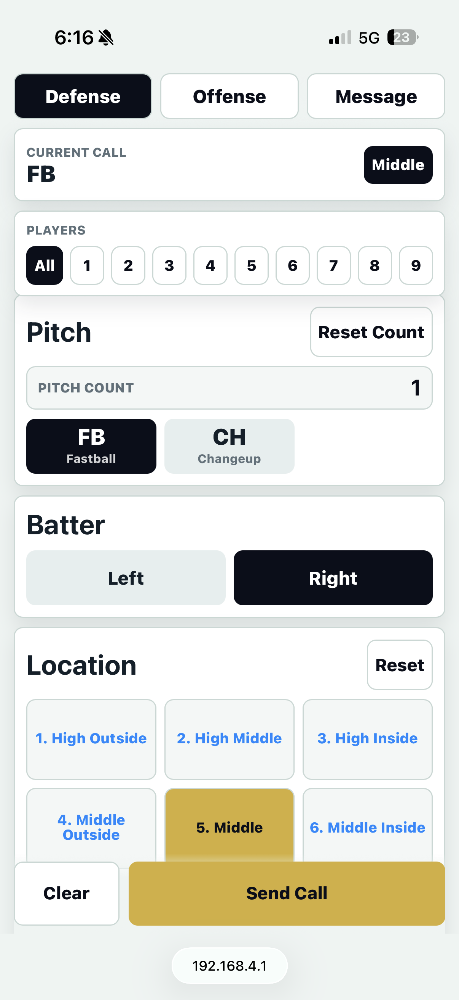
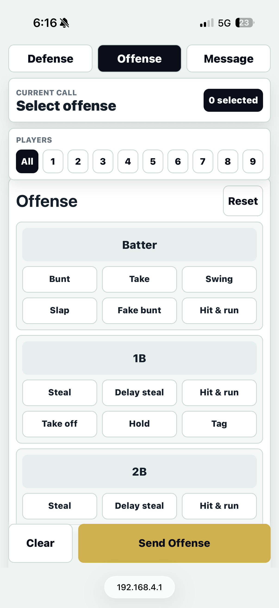
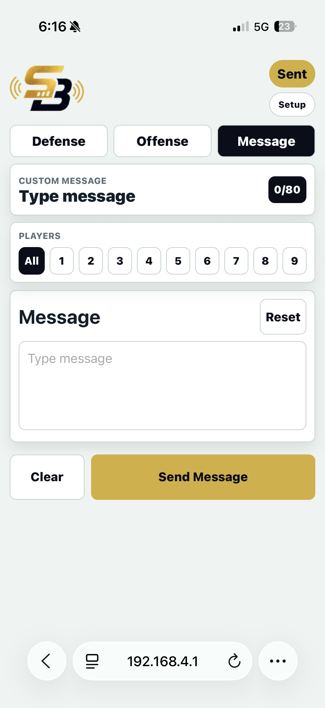
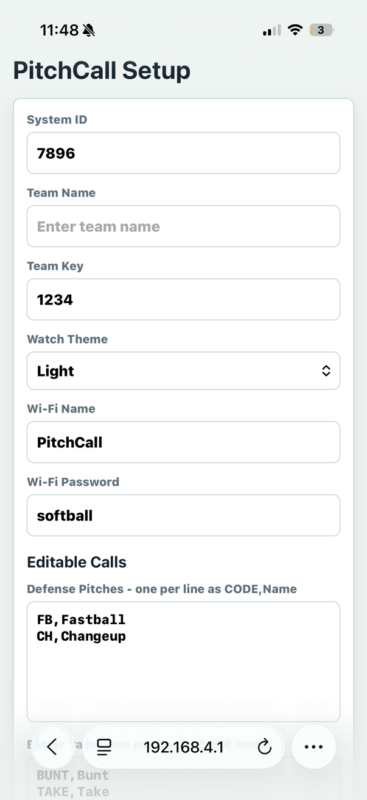
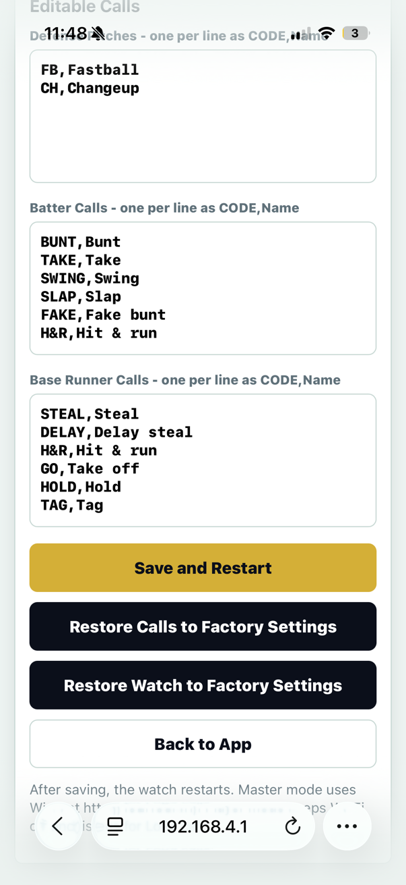
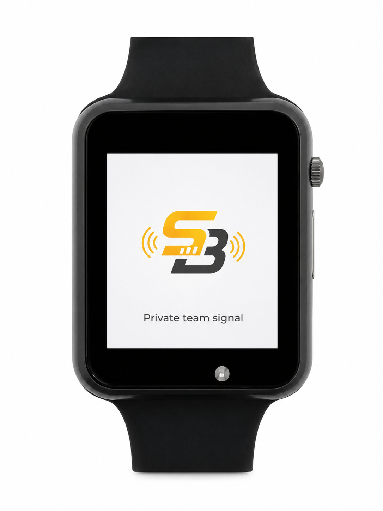
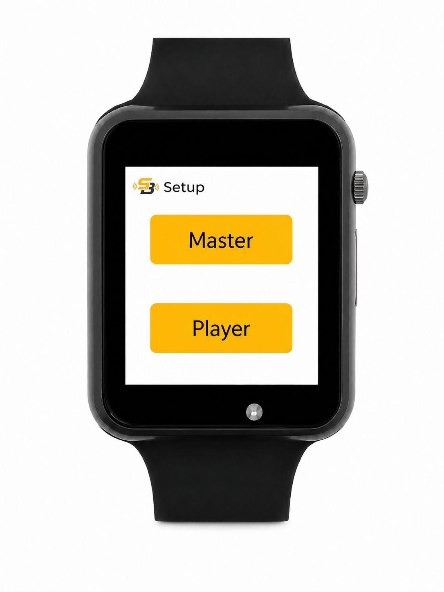
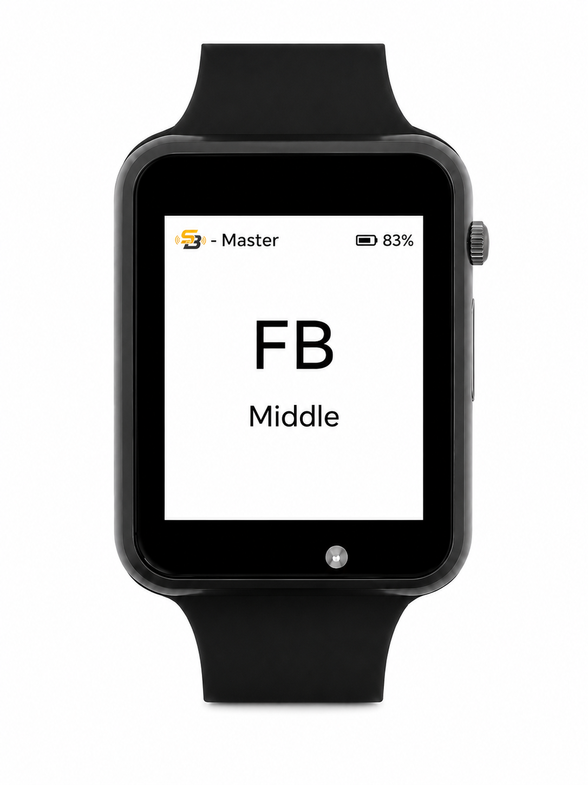

Electronic pitch calling for softball and baseball
Call the play.
Own the moment.
SignalBand is an electronic pitch calling and team signal system that sends encrypted pitch, defensive, offensive, and team messages from the dugout to player wrist displays without internet, cellular service, routers, or annual subscription fees. Connect and start calling pitches in under 1 minute.
No internet
No cell service
Encrypted calls
Under 1 minute
No annual contract
Built for real game flow
Simple calls. Clear screens. Less confusion.
Coaches can send pitch locations, offensive plays, defensive calls, and short custom messages. Players see only what they need on a rugged wrist display, centered and easy to read between pitches.
Defense
Pitch type, batter side, location, and modifier calls built for catcher and pitcher communication.
Offense
Send multi-position calls such as batter bunt and 1B steal at the same time.
Team Messages
Send short custom messages to the field when the moment does not fit a preset button.
Custom Setup
Edit call lists, team name, system ID, team key, Wi-Fi name, password, and display mode from the local setup screen.
How it works
No router. No hotspot. No cloud.
Connect
The coach connects a phone to the SignalBand master device and can be ready to call pitches within 1 minute.
Call
The coach selects the pitch, play, or message from a simple local screen with team-key encryption.
Deliver
Player wrist displays receive the signal and show the call clearly.
Coach control screen
Everything the coach needs.
Run defense, offense, custom messages, and team setup from a local phone screen. Calls are sent through the SignalBand system with encryption and matching team settings.





Player wrist display
The call is clear the moment it hits the wrist.
Players choose Master or Player mode on startup, then receive easy-to-read encrypted calls on the watch screen. The display stays simple: startup, setup, and the live call.



The point
Own the system instead of renting it every season.
- No internet or cellular network required
- Encrypted team-key communication
- No annual software subscription
- Preset and custom calls
- Master and player watch modes
- Local setup for each team
Electronic pitch caller FAQ
Built for teams that need simple, private pitch calling.
What does SignalBand do?
SignalBand lets coaches send electronic pitch calls, defensive signals, offensive plays, and custom team messages to player wrist displays.
Does it need internet?
No. SignalBand is designed to work at the field without internet, cellular service, a router, or school Wi-Fi.
Who is it for?
SignalBand is built for softball and baseball programs that want fast pitch calling, clear player communication, and team-owned equipment.
Is there a yearly fee?
No yearly software subscription is required. Teams can own the SignalBand software and choose the watches that fit their program.
Contact
Ready to test it with your team?
Built for coaches who want fast communication, clean execution, and no subscription hanging over the program. Send your info and we will follow up about a demo, pricing, and team setup.